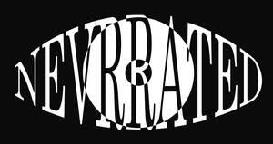

Trade Mark Journal No.2025/038 19 September 2025
UK00004260021 5 September 2025 (9,25,35,38,41)

- Class 9
- Music recordings; Music headphones; Music cassettes; Music software; Music tapes; Downloadable music sound recordings; Prerecorded music videos; Digital music players; Tape recordings of music; Pre-recorded CDs featuring music; Downloadable digital music; Audio tapes featuring music; Electronic sheet music, downloadable; Portable music players; Musical video recordings; Phonograph records featuring music; Prerecorded music audio tapes; Downloadable video recordings featuring music; Downloadable music files; Pre-recorded audio cassettes featuring music; Downloadable musical sound recordings; Digital music downloadable from the Internet; Musical recordings; Musical sound recordings; Pre-recorded DVDs featuring music; Prerecorded video cassettes featuring music; Prerecorded audio tapes featuring music; Docking stations for digital music players; Prerecorded video tapes featuring music; Pre-recorded video tapes featuring music; Computer software for creating and editing music and sounds; Optical discs featuring music; Pre-recorded laser discs featuring music; Series of musical sound recordings; Digital music downloadable provided from the internet.
- Class 25
- Clothing; Knitwear [clothing]; Jackets [clothing]; Ready-to-wear clothing; Woolen clothing; Furs [clothing]; Garments for protecting clothing; Layettes [clothing]; Clothing layettes; Linen clothing; Headbands [clothing]; Headbands for clothing; Gloves [clothing]; Gloves as clothing; Clothes; Aprons [clothing]; Maternity clothing; Kerchiefs [clothing]; Jerseys [clothing]; Denims [clothing]; Shorts [clothing]; Cashmere clothing; Capes (clothing); Oilskins [clothing]; Gabardines [clothing]; Leather clothing; Clothing of leather; Leather (Clothing of -); Silk clothing; Parts of clothing, footwear and headgear; Collars [clothing]; Veils [clothing]; Knitted clothing; Hoods [clothing]; Windproof clothing; Corsets [clothing, foundation garments]; Embroidered clothing; Wristbands [clothing]; Belts [clothing]; Belts for clothing; Rainproof clothing; Bandeaux [clothing]; Casual clothing; Waterproof clothing; Visors [clothing]; Jackets being sports clothing; Jackets (Stuff -) [clothing]; Stuff jackets [clothing]; Bottoms [clothing]; Playsuits [clothing]; Clothing for leisure wear; Ready-made clothing; Latex clothing; Trunks being clothing; Woven clothing; Infant clothing; Drawers [clothing]; Drawers as clothing; Leisure clothing; Clothing for sports; Sports clothing; Ties [clothing]; Clothing for children; Athletic clothing; Muffs [clothing]; Bodies [clothing]; Clothing for babies; Tops [clothing]; Clothing for infants; Clothing for cycling; Weatherproof clothing; Pockets for clothing; Fabric belts [clothing]; Water-resistant clothing; Triathlon clothing; Handwarmers [clothing]; Clothing for skiing; Beach clothing; Thermal clothing; Cowls [clothing]; Chaps (clothing); Men's clothing; Fishing clothing; Dance clothing; Mitts [clothing]; Braces for clothing; Shirts; Sweat shirts; Turtleneck shirts; Short-sleeve shirts; Polo shirts; Dress shirts; Short-sleeved shirts; Knit shirts; T-shirts; Open-necked shirts; Long-sleeved shirts; Pique shirts; Shirts for suits; Collared shirts; Sleep shirts; Football shirts; Golf shirts; Soccer shirts; Corduroy shirts; Maternity shirts; Rugby shirts; Camouflage shirts; Woven shirts; Short-sleeved T-shirts; Aloha shirts; Tee-shirts; Yoga shirts; Ramie shirts; Tennis shirts; Shirts and slips; Mock turtleneck shirts; Night shirts; Hooded sweat shirts; Sports shirts; Button-front aloha shirts; Sport shirts; Casual shirts; Fishing shirts; Under shirts; Hunting shirts; Button down shirts; Sports shirts with short sleeves; Shirt yokes; Yokes (Shirt -); Moisture-wicking sports shirts; Printed t-shirts; Undershirts; American football shirts; Sleeveless jerseys; Bibs, sleeved, not of paper; Polo sweaters; Sweatshirts; Tank-tops; Undershirts for kimonos (juban); Padded shirts for athletic use; Shirt fronts; Hoodies; Babies' pants [clothing]; Sleeveless jackets; V-neck sweaters; Sleeved jackets; Nappy pants [clothing]; Jerseys; Blouses; Dress pants; Trousers shorts; Sweat pants; Clothing for wear in wrestling games; Polo knit tops; Sweat shorts; Jeans; Sweaters; Sweat jackets; Denim pants; Leggings [trousers]; Turtleneck sweaters; Stuff jackets; Bibs, not of paper; Sweatpants; Babies' pants [underwear]; Quilted jackets [clothing]; Knit jackets; Snap crotch shirts for infants and toddlers; Collars for dresses; Paper hats for use as clothing items; Boy shorts [underwear]; Pants; Golf clothing, other than gloves; Denim jackets; Bandanas; Bib shorts; Belts (Money -) [clothing]; Money belts [clothing]; Hats (Paper -) [clothing]; Paper hats [clothing]; Waistcoats [vests]; Nightshirts; Mock turtleneck sweaters; Undershirts for kimonos (koshimaki); Undershirts for kimonos [koshimaki]; Braces [suspenders] for clothing / Suspenders [braces] for clothing; Long sleeved vests; Party hats [clothing]; Maternity shorts.
- Class 35
- Online retail services for downloadable and pre-recorded music and movies; Promotion of musical concerts; Inventorying merchandise; Display services for merchandise; Merchandising; Product merchandising; Online retail store services relating to clothing; Retail services connected with the sale of clothing and clothing accessories; Mail order retail services for clothing accessories; Retail of third-party pre-paid cards for the purchase of clothing; Promoting the sale of fashion goods through promotional articles in magazines; Merchandizing; Retail services relating to sporting goods; Online retail store services in relation to clothing; Promoting the sale of goods and services of others through the distribution of printed material and promotional contests; Promoting the sale of goods and services of others through promotional events; Retail store services in the field of clothing; Business merchandising display services; Retail services in relation to clothing accessories; Wholesale services relating to sporting goods; Product merchandising for others; Advertising services relating to the sale of goods; Promoting the goods and services of others through the distribution of discount cards; Online retail services relating to clothing; Mail order retail services for clothing; Mail order retail services connected with clothing accessories; Retail services relating to clothing; Advertising services to promote the sale of beverages; Online retail services relating to handbags; Mail order retail services related to foodstuffs; Online retail store services relating to cosmetic and beauty products; Procuring of contracts for the purchase and sale of goods; Mail order retail services related to non-alcoholic beverages; Online retail services relating to toys; Retail services relating to fake furs; Online retail services relating to jewelry; Retail services via catalogues related to foodstuffs; Promoting the goods and services of others through the administration of sales and promotional incentive schemes involving trading stamps; Retail services relating to jewelry; Arranging of contracts for the purchase and sale of goods and services, for others; Preparing promotional and merchandising material for others; Online retail services relating to luggage; Retail services relating to furs; Retail services in relation to downloadable virtual clothing; Retail of third-party pre-paid cards for the purchase of entertainment services; Retail services relating to automobile accessories; Retail services in relation to downloadable virtual handbags; Unmanned retail store services relating to drink; Retail services relating to bakery products; Wholesale services relating to clothing; Unmanned retail store services relating to food; Retail services in relation to clothing; Online retail services for downloadable virtual clothing; Promoting the goods and services of others by arranging for sponsors to affiliate their goods and services with sporting activities; Retail services relating to delicatessen products; Mail order retail services related to beer; Online retail services in relation to downloadable virtual clothing; Mail order retail services related to alcoholic beverages (except beer); Promotion of goods and services through sponsorship of sports events; Sales promotions at point of purchase or sale, for others; Promoting the goods and services of others through discount card programs; Promotion of goods and services for others; Promotion of goods and services through sponsorship; Retail services in relation to fashion accessories; Online retail services in relation to downloadable virtual handbags; Retail services in relation to stationery supplies; Procurement of contracts for the purchase and sale of goods and services; Retail services via catalogues related to alcoholic beverages (except beer); Retail services connected with the sale of furniture; Retail services via catalogues related to beer; Procurement of contracts for the purchase and sale of goods and services for others; Advertising particularly services for the promotion of goods; Promoting the goods and services of others by arranging for sponsors to affiliate their goods and services with sports competitions; Purchasing of goods and services for other businesses; Retail services in relation to downloadable virtual headwear; Trade promotional services; Marketing the goods and services of others by distributing coupons; Mail order retail services for cosmetics; Retail services relating to candy; Sales promotion services; Retail services via catalogues related to non-alcoholic drinks; Online retail services relating to cosmetics; Online retail services in relation to downloadable virtual headwear; Retail services in relation to downloadable virtual footwear; Organization of fashion parades for sales promotion purposes; Negotiation of contracts relating to the purchase and sale of goods; Retail services in relation to toys; Retail services relating to furniture; Wholesale services relating to fake furs; Retail services relating to horticultural products; Promotion of goods and services through sponsorship of international sports events; Retail services in relation to bakery products; Retail services in relation to baked goods; Online retail services in relation to downloadable virtual footwear; Retail services in relation to pet products; Promoting the goods and services of others by arranging for sponsors to affiliate their goods and services with awards programs; Wholesale services relating to jewelry; Wholesale services in relation to clothing; Wholesale services relating to automobile accessories; Retail services in relation to sporting equipment; Retail services in relation to bags.
- Class 38
- Music broadcasting; Radio broadcasting; Radio and television broadcasting; Television and radio broadcasting; Television and radio transmission; Television and radio transmission and broadcasting; Radio communications; Radio program broadcasting; Radio and television program broadcasting; Radio telecommunications; Broadcasting of radio programs; Radio programme broadcasting; Broadcasting of radio programmes; Radio and television programme broadcasting; Broadcasting of radio and television programs; Radio communication; Interactive television and radio broadcasting; Broadcast of radio programmes; Broadcasting of radio and television programmes; Radio and television broadcasting services; Television and radio broadcasting services; Television and/or radio broadcasting; Radio broadcasting services; Broadcasting and transmission of radio programs; Transmission of radio and television programs; Transmission of radio and television programmes; Radio, television and cable broadcasting services; Broadcasting of programmes by radio; Transmission of radio programmes; Rental of radio broadcasting instruments; Transmission of radio programs; Transmission of radio and television programmes by satellite; Internet radio broadcasting services; Rental of radio and television broadcasting facilities; Cable radio transmission; Radio broadcasting of information and other programs; Mobile radio communications; Radio and television broadcasting, also via cable networks; Broadcasting of television and radio programs via cable or wireless networks; Broadcasting of radio and television programs via cable or wireless networks; Operation of radio broadcasting equipment; Mobile radio communication; Provision of facilities for radio receiving and radio transmission; Leasing of radio telephones; Communication by radio; Paging by radio; Radio frequency communications services; Television broadcast transmissions; Satellite television broadcasting; Television broadcasting; Broadcasting (Television -); Radio communication services; Communication via radio; Wireless transmission and broadcasting of television programmes; Narrowband radio communication services; Broadcasting of financial information by radio; Cellular radio telephone services.
- Class 41
- Music concerts; Recording of music; Music recording; Music publishing and music recording services; Music performances; Jazz music entertainment services; Production of music concerts; Music education; Presentation of music concerts; Live music concerts; Performance of music; Pop music concerts (Organisation of -); Production of music; Music production; Music concert services; Teaching of music; Music publishing; Publishing of music; Performance of music and singing; Tuition in music; Organisation of music concerts; Production of sound and music recordings; Music festival services; Instruction in music; Music instruction; Performing of music and singing; Performance of dance, music and drama; Live music performances; Music entertainment services; Publication of music; Arranging of music performances; Music composition services; Direction of music performances; Organising of festivals relating to jazz music; Composition of music for others; Music composition for others; Music recording studio services; Live music services; Rental of phonographic and music recordings; Music mixing services; Production of music shows; Live music shows; Artistic management of music venues; Arranging of music shows; Music cassettes (Rental of -); Tuition in music appreciation; Music library services; Music group services; Music performance services; Music production services; Publication of sheet music; Music publishing services; Provision of live music; Music transcription for others; Musical concerts by radio; Musical entertainment; Music competition services; Arranging and conducting of music concerts; Live musical concerts; Publication of music books; Music transcription services; Providing digital music from the internet; Entertainment in the nature of live performances by musical bands; Presentation of musical concerts; Musical concerts by television; Education and training in the field of music and entertainment; Selection and compilation of pre-recorded music for broadcasting by others; Sound recording and video entertainment services; Musical concert services; Entertainment in the form of recorded music (Services providing -); Arranging of musical entertainment; Entertainment in the nature of dance performances; Production of musical recordings; Entertainment in the nature of live dance performances.
NETH INVESTMENTS LTD